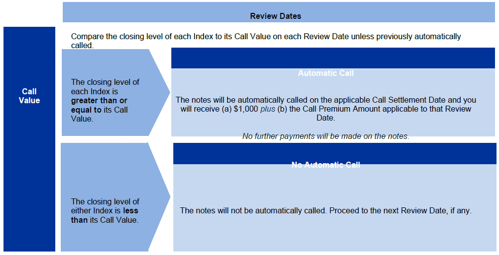
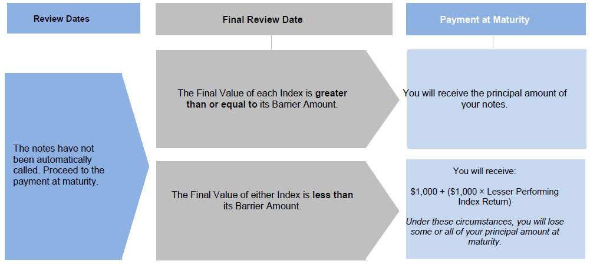
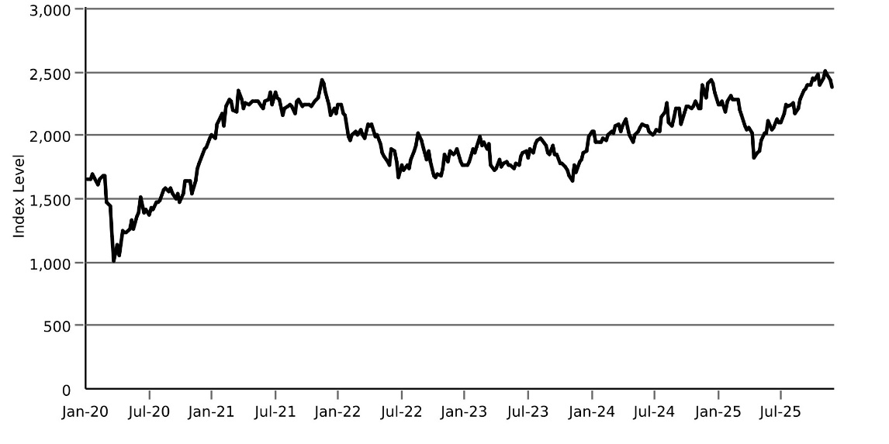

The information in this preliminary pricing supplement is not complete and may be changed. This preliminary pricing supplement is not an offer to sell nor does it seek an offer to buy these securities in any jurisdiction where the offer or sale is not permitted.
Subject to completion dated November 17, 2025

|
November , 2025 |
Registration Statement Nos. 333-270004 and 333-270004-01; Rule 424(b)(2) |
JPMorgan Chase Financial Company LLC
Structured Investments
Review Notes Linked to the Lesser Performing of the Russell 2000® Index and the S&P 500® Index due November 29, 2030
Fully and Unconditionally Guaranteed by JPMorgan Chase & Co.
●The notes are designed for investors who seek early exit prior to maturity at a premium if, on any Review Date, the closing level of each of the Russell 2000® Index and the S&P 500® Index, which we refer to as the Indices, is at or above its Call Value.
●The earliest date on which an automatic call may be initiated is December 2, 2026.
●Investors should be willing to forgo interest and dividend payments and be willing to accept the risk of losing some or all of their principal amount at maturity.
●The notes are unsecured and unsubordinated obligations of JPMorgan Chase Financial Company LLC, which we refer to as JPMorgan Financial, the payment on which is fully and unconditionally guaranteed by JPMorgan Chase & Co. Any payment on the notes is subject to the credit risk of JPMorgan Financial, as issuer of the notes, and the credit risk of JPMorgan Chase & Co., as guarantor of the notes.
●Payments on the notes are not linked to a basket composed of the Indices. Payments on the notes are linked to the performance of each of the Indices individually, as described below.
●Minimum denominations of $1,000 and integral multiples thereof
●The notes are expected to price on or about November 25, 2025 and are expected to settle on or about November 28, 2025.
●CUSIP: 48136LQH5
Investing in the notes involves a number of risks. See “Risk Factors” beginning on page S-2 of the accompanying prospectus supplement, Annex A to the accompanying prospectus addendum, “Risk Factors” beginning on page PS-11 of the accompanying product supplement and “Selected Risk Considerations” beginning on page PS-4 of this pricing supplement.
Neither the Securities and Exchange Commission (the “SEC”) nor any state securities commission has approved or disapproved of the notes or passed upon the accuracy or the adequacy of this pricing supplement or the accompanying product supplement, underlying supplement, prospectus supplement, prospectus and prospectus addendum. Any representation to the contrary is a criminal offense.
|
|
Price to Public (1)(2) |
Fees and Commissions (2)(3) |
Proceeds to Issuer |
|
|
Per note |
$1,000 |
$ |
$ |
|
|
Total |
$ |
$ |
$ |
|
|
(1) See “Supplemental Use of Proceeds” in this pricing supplement for information about the components of the price to public of the notes. (2) With respect to notes sold to certain fee-based advisory accounts for which an affiliated or unaffiliated broker-dealer is an investment adviser, the price to the public will not be lower than $966.50 per $1,000 principal amount note. J.P. Morgan Securities LLC, which we refer to as JPMS, and these broker-dealers will forgo any selling commissions related to these sales. See “Plan of Distribution (Conflicts of Interest)” in the accompanying product supplement. (3) With respect to notes sold to brokerage accounts, JPMS, acting as agent for JPMorgan Financial, will pay all of the selling commissions it receives from us to other affiliated or unaffiliated dealers. In no event will these selling commissions exceed $33.50 per $1,000 principal amount note. See “Plan of Distribution (Conflicts of Interest)” in the accompanying product supplement. |
||||
If the notes priced today, the estimated value of the notes would be approximately $954.00 per $1,000 principal amount note. The estimated value of the notes, when the terms of the notes are set, will be provided in the pricing supplement and will not be less than $940.00 per $1,000 principal amount note. See “The Estimated Value of the Notes” in this pricing supplement for additional information.
The notes are not bank deposits, are not insured by the Federal Deposit Insurance Corporation or any other governmental agency and are not obligations of, or guaranteed by, a bank.
Pricing supplement to product supplement no. 4-I dated April 13, 2023, underlying supplement no. 1-I dated April 13, 2023, the prospectus and prospectus supplement, each dated April 13, 2023, and the prospectus addendum dated June 3, 2024
Key Terms
|
Issuer: JPMorgan Chase Financial Company LLC, a direct, wholly owned finance subsidiary of JPMorgan Chase & Co. Guarantor: JPMorgan Chase & Co. Indices: The Russell 2000® Index (Bloomberg ticker: RTY) and the S&P 500® Index (Bloomberg ticker: SPX) (each an “Index” and collectively, the “Indices”) Call Premium Amount: The Call Premium Amount with respect to each Review Date is set forth below: ●first Review Date: at least 9.7500% × $1,000 ●second Review Date: at least 12.1875% × $1,000 ●third Review Date: at least 14.6250% × $1,000 ●fourth Review Date: at least 17.0625% × $1,000 ●fifth Review Date: at least 19.5000% × $1,000 ●sixth Review Date: at least 21.9375% × $1,000 ●seventh Review Date: at least 24.3750% × $1,000 ●eighth Review Date: at least 26.8125% × $1,000 ●ninth Review Date: at least 29.2500% × $1,000 ●tenth Review Date: at least 31.6875% × $1,000 ●eleventh Review Date: at least 34.1250% × $1,000 ●twelfth Review Date: at least 36.5625% × $1,000 ●thirteenth Review Date: at least 39.0000% × $1,000 ●fourteenth Review Date: at least 41.4375% × $1,000 ●fifteenth Review Date: at least 43.8750% × $1,000 ●sixteenth Review Date: at least 46.3125% × $1,000 ●final Review Date: at least 48.7500% × $1,000 (in each case, to be provided in the pricing supplement)
Call Value: With respect to each Index, 100.00% of its Initial Value Barrier Amount: With respect to each Index, 70.00% of its Initial Value Pricing Date: On or about November 25, 2025 Original Issue Date (Settlement Date): On or about November 28, 2025 Review Dates*: December 2, 2026, February 25, 2027, May 25, 2027, August 25, 2027, November 26, 2027, February 25, 2028, May 25, 2028, August 25, 2028, November 27, 2028, February 26, 2029, May 25, 2029, August 27, 2029, November 26, 2029, February 25, 2030, May 28, 2030, August 26, 2030 and November 25, 2030 (final Review Date) Call Settlement Dates*: December 8, 2026, March 2, 2027, May 28, 2027, August 30, 2027, December 1, 2027, March 1, 2028, May 31, 2028, August 30, 2028, November 30, 2028, March 1, 2029, May 31, 2029, August 30, 2029, November 29, 2029, February 28, 2030, May 31, 2030, August 29, 2030 and the Maturity Date Maturity Date*: November 29, 2030 * Subject to postponement in the event of a market disruption event and as described under “General Terms of Notes — Postponement of a Determination Date — Notes Linked to Multiple Underlyings” and “General Terms of Notes — Postponement of a Payment Date” in the accompanying product supplement |
|
Automatic Call: If the closing level of each Index on any Review Date is greater than or equal to its Call Value, the notes will be automatically called for a cash payment, for each $1,000 principal amount note, equal to (a) $1,000 plus (b) the Call Premium Amount applicable to that Review Date, payable on the applicable Call Settlement Date. No further payments will be made on the notes. Payment at Maturity: If the notes have not been automatically called and the Final Value of each Index is greater than or equal to its Barrier Amount, you will receive the principal amount of your notes at maturity. If the notes have not been automatically called and the Final Value of either Index is less than its Barrier Amount, your payment at maturity per $1,000 principal amount note will be calculated as follows: $1,000 + ($1,000 × Lesser Performing Index Return) If the notes have not been automatically called and the Final Value of either Index is less than its Barrier Amount, you will lose more than 30.00% of your principal amount at maturity and could lose all of your principal amount at maturity. Lesser Performing Index: The Index with the Lesser Performing Index Return Lesser Performing Index Return: The lower of the Index Returns of the Indices Index Return: With respect to each Index, (Final Value – Initial Value) Initial Value: With respect to each Index, the closing level of that Index on the Pricing Date Final Value: With respect to each Index, the closing level of that Index on the final Review Date |
|
PS-1| Structured Investments Review Notes Linked to the Lesser Performing of the Russell 2000® Index and the S&P 500® Index |
|

Supplemental Terms of the Notes
Any value of any underlier, and any values derived therefrom, included in this pricing supplement may be corrected, in the event of manifest error or inconsistency, by amendment of this pricing supplement and the corresponding terms of the notes. Notwithstanding anything to the contrary in the indenture governing the notes, that amendment will become effective without consent of the holders of the notes or any other party.
How the Notes Work
Payment upon an Automatic Call

Payment at Maturity If the Notes Have Not Been Automatically Called

|
PS-2| Structured Investments Review Notes Linked to the Lesser Performing of the Russell 2000® Index and the S&P 500® Index |
|
Call Premium Amount
The table below illustrates the hypothetical Call Premium Amount per $1,000 principal amount note for each Review Date based on the minimum Call Premium Amounts set forth under “Key Terms — Call Premium Amount” above. The actual Call Premium Amounts will be provided in the pricing supplement and will not be less than the minimum Call Premium Amounts set forth under “Key Terms — Call Premium Amount.”
|
Review Date |
Call Premium Amount |
|
First |
$97.500 |
|
Second |
$121.875 |
|
Third |
$146.250 |
|
Fourth |
$170.625 |
|
Fifth |
$195.000 |
|
Sixth |
$219.375 |
|
Seventh |
$243.750 |
|
Eighth |
$268.125 |
|
Ninth |
$292.500 |
|
Tenth |
$316.875 |
|
Eleventh |
$341.250 |
|
Twelfth |
$365.625 |
|
Thirteenth |
$390.000 |
|
Fourteenth |
$414.375 |
|
Fifteenth |
$438.750 |
|
Sixteenth |
$463.125 |
|
Final |
$487.500 |
Hypothetical Payout Examples
The following examples illustrate payments on the notes linked to two hypothetical Indices, assuming a range of performances for the hypothetical Lesser Performing Index on the Review Dates.
Solely for purposes of this section, the Lesser Performing Index with respect to each Review Date is the lesser performing of the Indices determined based on the closing level of each Index on that Review Date compared with its Initial Value.
The hypothetical payments set forth below assume the following:
●the notes were sold solely to brokerage accounts;
●an Initial Value for each Index of 100.00;
●a Call Value for each Index of 100.00 (equal to 100.00% of its hypothetical Initial Value);
●a Barrier Amount for each Index of 70.00 (equal to 70.00% of its hypothetical Initial Value); and
●the Call Premium Amounts are equal to the minimum Call Premium Amounts set forth under “Key Terms — Call Premium Amount” above.
The hypothetical Initial Value of each Index of 100.00 has been chosen for illustrative purposes only and may not represent a likely actual Initial Value of either Index. The actual Initial Value of each Index will be the closing level of that Index on the Pricing Date and will be provided in the pricing supplement. For historical data regarding the actual closing levels of each Index, please see the historical information set forth under “The Indices” in this pricing supplement.
Each hypothetical payment set forth below is for illustrative purposes only and may not be the actual payment applicable to a purchaser of the notes. The numbers appearing in the following examples have been rounded for ease of analysis.
Example 1 — Notes are automatically called on the first Review Date.
|
Date |
Closing Level of Lesser Performing Index |
|
|
First Review Date |
110.00 |
Notes are automatically called |
|
|
Total Payment |
$1,097.50 (9.75% return) |
Because the closing level of each Index on the first Review Date is greater than or equal to its Call Value, the notes will be automatically called for a cash payment, for each $1,000 principal amount note, of $1,097.50 (or $1,000 plus the Call Premium Amount applicable to the first Review Date), payable on the applicable Call Settlement Date. No further payments will be made on the notes.
|
PS-3| Structured Investments Review Notes Linked to the Lesser Performing of the Russell 2000® Index and the S&P 500® Index |
|
Example 2 — Notes are automatically called on the final Review Date.
|
Date |
Closing Level of Lesser Performing Index |
|
|
First Review Date |
90.00 |
Notes NOT automatically called |
|
Second Review Date |
85.00 |
Notes NOT automatically called |
|
Third through Sixteenth Review Dates |
Less than Call Value |
Notes NOT automatically called |
|
Final Review Date |
150.00 |
Notes are automatically called |
|
|
Total Payment |
$1,487.50 (48.75% return) |
Because the closing level of each Index on the final Review Date is greater than or equal to its Call Value, the notes will be automatically called for a cash payment, for each $1,000 principal amount note, of $1,487.50 (or $1,000 plus the Call Premium Amount applicable to the final Review Date), payable on the applicable Call Settlement Date, which is the Maturity Date.
Example 3 — Notes have NOT been automatically called and the Final Value of the Lesser Performing Index is greater than or equal to its Barrier Amount.
|
Date |
Closing Level of Lesser Performing Index |
|
|
First Review Date |
90.00 |
Notes NOT automatically called |
|
Second Review Date |
85.00 |
Notes NOT automatically called |
|
Third through Sixteenth Review Dates |
Less than Call Value |
Notes NOT automatically called |
|
Final Review Date |
80.00 |
Notes NOT automatically called; Final Value of Lesser Performing Index is greater than or equal to Barrier Amount |
|
|
Total Payment |
$1,000.00 (0.00% return) |
Because the notes have not been automatically called and the Final Value of the Lesser Performing Index is greater than or equal to its Barrier Amount, the payment at maturity, for each $1,000 principal amount note, will be $1,000.00.
Example 4 — Notes have NOT been automatically called and the Final Value of the Lesser Performing Index is less than its Barrier Amount.
|
Date |
Closing Level of Lesser Performing Index |
|
|
First Review Date |
80.00 |
Notes NOT automatically called |
|
Second Review Date |
75.00 |
Notes NOT automatically called |
|
Third through Sixteenth Review Dates |
Less than Call Value |
Notes NOT automatically called |
|
Final Review Date |
50.00 |
Notes NOT automatically called; Final Value of Lesser Performing Index is less than Barrier Amount |
|
|
Total Payment |
$500.00 (-50.00% return) |
Because the notes have not been automatically called, the Final Value of the Lesser Performing Index is less than its Barrier Amount and the Lesser Performing Index Return is -50.00%, the payment at maturity will be $500.00 per $1,000 principal amount note, calculated as follows:
$1,000 + [$1,000 × (-50.00%)] = $500.00
The hypothetical returns and hypothetical payments on the notes shown above apply only if you hold the notes for their entire term or until automatically called. These hypotheticals do not reflect the fees or expenses that would be associated with any sale in the secondary market. If these fees and expenses were included, the hypothetical returns and hypothetical payments shown above would likely be lower.
Selected Risk Considerations
An investment in the notes involves significant risks. These risks are explained in more detail in the “Risk Factors” sections of the accompanying prospectus supplement and product supplement and in Annex A to the accompanying prospectus addendum.
●YOUR INVESTMENT IN THE NOTES MAY RESULT IN A LOSS —
The notes do not guarantee any return of principal. If the notes have not been automatically called and the Final Value of either Index is less than its Barrier Amount, you will lose 1% of the principal amount of your notes for every 1% that the Final Value of the
|
PS-4| Structured Investments Review Notes Linked to the Lesser Performing of the Russell 2000® Index and the S&P 500® Index |
|
Lesser Performing Index is less than its Initial Value. Accordingly, under these circumstances, you will lose more than 30.00% of your principal amount at maturity and could lose all of your principal amount at maturity.
●CREDIT RISKS OF JPMORGAN FINANCIAL AND JPMORGAN CHASE & CO. —
Investors are dependent on our and JPMorgan Chase & Co.’s ability to pay all amounts due on the notes. Any actual or potential change in our or JPMorgan Chase & Co.’s creditworthiness or credit spreads, as determined by the market for taking that credit risk, is likely to adversely affect the value of the notes. If we and JPMorgan Chase & Co. were to default on our payment obligations, you may not receive any amounts owed to you under the notes and you could lose your entire investment.
●AS A FINANCE SUBSIDIARY, JPMORGAN FINANCIAL HAS NO INDEPENDENT OPERATIONS AND HAS LIMITED ASSETS —
As a finance subsidiary of JPMorgan Chase & Co., we have no independent operations beyond the issuance and administration of our securities and the collection of intercompany obligations. Aside from the initial capital contribution from JPMorgan Chase & Co., substantially all of our assets relate to obligations of JPMorgan Chase & Co. to make payments under loans made by us to JPMorgan Chase & Co. or under other intercompany agreements. As a result, we are dependent upon payments from JPMorgan Chase & Co. to meet our obligations under the notes. We are not a key operating subsidiary of JPMorgan Chase & Co. and in a bankruptcy or resolution of JPMorgan Chase & Co. we are not expected to have sufficient resources to meet our obligations in respect of the notes as they come due. If JPMorgan Chase & Co. does not make payments to us and we are unable to make payments on the notes, you may have to seek payment under the related guarantee by JPMorgan Chase & Co., and that guarantee will rank pari passu with all other unsecured and unsubordinated obligations of JPMorgan Chase & Co. For more information, see the accompanying prospectus addendum.
●THE APPRECIATION POTENTIAL OF THE NOTES IS LIMITED TO ANY CALL PREMIUM AMOUNT PAID ON THE NOTES,
regardless of any appreciation of either Index, which may be significant. You will not participate in any appreciation of either Index.
●POTENTIAL CONFLICTS —
We and our affiliates play a variety of roles in connection with the notes. In performing these duties, our and JPMorgan Chase & Co.’s economic interests are potentially adverse to your interests as an investor in the notes. It is possible that hedging or trading activities of ours or our affiliates in connection with the notes could result in substantial returns for us or our affiliates while the value of the notes declines. Please refer to “Risk Factors — Risks Relating to Conflicts of Interest” in the accompanying product supplement.
●JPMORGAN CHASE & CO. IS CURRENTLY ONE OF THE COMPANIES THAT MAKE UP THE S&P 500® INDEX,
but JPMorgan Chase & Co. will not have any obligation to consider your interests in taking any corporate action that might affect the level of the S&P 500® Index.
●AN INVESTMENT IN THE NOTES IS SUBJECT TO RISKS ASSOCIATED WITH SMALL CAPITALIZATION STOCKS WITH RESPECT TO THE RUSSELL 2000® INDEX —
Small capitalization companies may be less able to withstand adverse economic, market, trade and competitive conditions relative to larger companies. Small capitalization companies are less likely to pay dividends on their stocks, and the presence of a dividend payment could be a factor that limits downward stock price pressure under adverse market conditions.
●YOU ARE EXPOSED TO THE RISK OF DECLINE IN THE LEVEL OF EACH INDEX —
Payments on the notes are not linked to a basket composed of the Indices and are contingent upon the performance of each individual Index. Poor performance by either of the Indices over the term of the notes may result in the notes not being automatically called on a Review Date, may negatively affect your payment at maturity and will not be offset or mitigated by positive performance by the other Index.
●YOUR PAYMENT AT MATURITY WILL BE DETERMINED BY THE LESSER PERFORMING INDEX.
●THE BENEFIT PROVIDED BY THE BARRIER AMOUNT MAY TERMINATE ON THE FINAL REVIEW DATE —
If the Final Value of either Index is less than its Barrier Amount and the notes have not been automatically called, the benefit provided by the Barrier Amount will terminate and you will be fully exposed to any depreciation of the Lesser Performing Index.
●THE AUTOMATIC CALL FEATURE MAY FORCE A POTENTIAL EARLY EXIT —
If your notes are automatically called, the term of the notes may be reduced to as short as approximately one year. There is no guarantee that you would be able to reinvest the proceeds from an investment in the notes at a comparable return for a similar level of risk. Even in cases where the notes are called before maturity, you are not entitled to any fees and commissions described on the front cover of this pricing supplement.
●THE NOTES DO NOT PAY INTEREST.
●YOU WILL NOT RECEIVE DIVIDENDS ON THE SECURITIES INCLUDED IN EITHER INDEX OR HAVE ANY RIGHTS WITH RESPECT TO THOSE SECURITIES.
●THE RISK OF THE CLOSING LEVEL OF AN INDEX FALLING BELOW ITS BARRIER AMOUNT IS GREATER IF THE LEVEL OF THAT INDEX IS VOLATILE.
●LACK OF LIQUIDITY —
The notes will not be listed on any securities exchange. Accordingly, the price at which you may be able to trade your notes is likely to depend on the price, if any, at which JPMS is willing to buy the notes. You may not be able to sell your notes. The notes are not designed to be short-term trading instruments. Accordingly, you should be able and willing to hold your notes to maturity.
●THE FINAL TERMS AND VALUATION OF THE NOTES WILL BE PROVIDED IN THE PRICING SUPPLEMENT —
You should consider your potential investment in the notes based on the minimums for the estimated value of the notes and the Call Premium Amounts.
|
PS-5| Structured Investments Review Notes Linked to the Lesser Performing of the Russell 2000® Index and the S&P 500® Index |
|
●THE ESTIMATED VALUE OF THE NOTES WILL BE LOWER THAN THE ORIGINAL ISSUE PRICE (PRICE TO PUBLIC) OF THE NOTES —
The estimated value of the notes is only an estimate determined by reference to several factors. The original issue price of the notes will exceed the estimated value of the notes because costs associated with selling, structuring and hedging the notes are included in the original issue price of the notes. These costs include the selling commissions, if any, the projected profits, if any, that our affiliates expect to realize for assuming risks inherent in hedging our obligations under the notes and the estimated cost of hedging our obligations under the notes. See “The Estimated Value of the Notes” in this pricing supplement.
●THE ESTIMATED VALUE OF THE NOTES DOES NOT REPRESENT FUTURE VALUES OF THE NOTES AND MAY DIFFER FROM OTHERS’ ESTIMATES —
See “The Estimated Value of the Notes” in this pricing supplement.
●THE ESTIMATED VALUE OF THE NOTES IS DERIVED BY REFERENCE TO AN INTERNAL FUNDING RATE —
The internal funding rate used in the determination of the estimated value of the notes may differ from the market-implied funding rate for vanilla fixed income instruments of a similar maturity issued by JPMorgan Chase & Co. or its affiliates. Any difference may be based on, among other things, our and our affiliates’ view of the funding value of the notes as well as the higher issuance, operational and ongoing liability management costs of the notes in comparison to those costs for the conventional fixed income instruments of JPMorgan Chase & Co. This internal funding rate is based on certain market inputs and assumptions, which may prove to be incorrect, and is intended to approximate the prevailing market replacement funding rate for the notes. The use of an internal funding rate and any potential changes to that rate may have an adverse effect on the terms of the notes and any secondary market prices of the notes. See “The Estimated Value of the Notes” in this pricing supplement.
●THE VALUE OF THE NOTES AS PUBLISHED BY JPMS (AND WHICH MAY BE REFLECTED ON CUSTOMER ACCOUNT STATEMENTS) MAY BE HIGHER THAN THE THEN-CURRENT ESTIMATED VALUE OF THE NOTES FOR A LIMITED TIME PERIOD —
We generally expect that some of the costs included in the original issue price of the notes will be partially paid back to you in connection with any repurchases of your notes by JPMS in an amount that will decline to zero over an initial predetermined period. See “Secondary Market Prices of the Notes” in this pricing supplement for additional information relating to this initial period. Accordingly, the estimated value of your notes during this initial period may be lower than the value of the notes as published by JPMS (and which may be shown on your customer account statements).
●SECONDARY MARKET PRICES OF THE NOTES WILL LIKELY BE LOWER THAN THE ORIGINAL ISSUE PRICE OF THE NOTES —
Any secondary market prices of the notes will likely be lower than the original issue price of the notes because, among other things, secondary market prices take into account our internal secondary market funding rates for structured debt issuances and, also, because secondary market prices may exclude selling commissions, if any, projected hedging profits, if any, and estimated hedging costs that are included in the original issue price of the notes. As a result, the price, if any, at which JPMS will be willing to buy the notes from you in secondary market transactions, if at all, is likely to be lower than the original issue price. Any sale by you prior to the Maturity Date could result in a substantial loss to you.
●SECONDARY MARKET PRICES OF THE NOTES WILL BE IMPACTED BY MANY ECONOMIC AND MARKET FACTORS —
The secondary market price of the notes during their term will be impacted by a number of economic and market factors, which may either offset or magnify each other, aside from the selling commissions, if any, projected hedging profits, if any, estimated hedging costs and the levels of the Indices. Additionally, independent pricing vendors and/or third party broker-dealers may publish a price for the notes, which may also be reflected on customer account statements. This price may be different (higher or lower) than the price of the notes, if any, at which JPMS may be willing to purchase your notes in the secondary market. See “Risk Factors — Risks Relating to the Estimated Value and Secondary Market Prices of the Notes — Secondary market prices of the notes will be impacted by many economic and market factors” in the accompanying product supplement.
|
PS-6| Structured Investments Review Notes Linked to the Lesser Performing of the Russell 2000® Index and the S&P 500® Index |
|
The Indices
The Russell 2000® Index consists of the middle 2,000 companies included in the Russell 3000ETM Index and, as a result of the index calculation methodology, consists of the smallest 2,000 companies included in the Russell 3000® Index. The Russell 2000® Index is designed to track the performance of the small capitalization segment of the U.S. equity market. For additional information about the Russell 2000® Index, see “Equity Index Descriptions — The Russell Indices” in the accompanying underlying supplement.
The S&P 500® Index consists of stocks of 500 companies selected to provide a performance benchmark for the U.S. equity markets. For additional information about the S&P 500® Index, see “Equity Index Descriptions — The S&P U.S. Indices” in the accompanying underlying supplement.
Historical Information
The following graphs set forth the historical performance of each Index based on the weekly historical closing levels from January 3, 2020 through November 14, 2025. The closing level of the Russell 2000® Index on November 17, 2025 was 2,341.377. The closing level of the S&P 500® Index on November 17, 2025 was 6,672.41. We obtained the closing levels above and below from the Bloomberg Professional® service (“Bloomberg”), without independent verification.
The historical closing levels of each Index should not be taken as an indication of future performance, and no assurance can be given as to the closing level of either Index on the Pricing Date or any Review Date. There can be no assurance that the performance of the Indices will result in the return of any of your principal amount.
|
Historical Performance of the Russell 2000® Index
 Source: Bloomberg |
|
Historical Performance of the S&P 500® Index
Source: Bloomberg |

|
PS-7| Structured Investments Review Notes Linked to the Lesser Performing of the Russell 2000® Index and the S&P 500® Index |
|
Tax Treatment
You should review carefully the section entitled “Material U.S. Federal Income Tax Consequences” in the accompanying product supplement no. 4-I. The following discussion, when read in combination with that section, constitutes the full opinion of our special tax counsel, Davis Polk & Wardwell LLP, regarding the material U.S. federal income tax consequences of owning and disposing of notes.
Based on current market conditions, in the opinion of our special tax counsel it is reasonable to treat the notes as “open transactions” that are not debt instruments for U.S. federal income tax purposes, as more fully described in “Material U.S. Federal Income Tax Consequences — Tax Consequences to U.S. Holders — Notes Treated as Open Transactions That Are Not Debt Instruments” in the accompanying product supplement. Assuming this treatment is respected, the gain or loss on your notes should be treated as long-term capital gain or loss if you hold your notes for more than a year, whether or not you are an initial purchaser of notes at the issue price. However, the IRS or a court may not respect this treatment, in which case the timing and character of any income or loss on the notes could be materially and adversely affected. In addition, in 2007 Treasury and the IRS released a notice requesting comments on the U.S. federal income tax treatment of “prepaid forward contracts” and similar instruments. The notice focuses in particular on whether to require investors in these instruments to accrue income over the term of their investment. It also asks for comments on a number of related topics, including the character of income or loss with respect to these instruments; the relevance of factors such as the nature of the underlying property to which the instruments are linked; the degree, if any, to which income (including any mandated accruals) realized by non-U.S. investors should be subject to withholding tax; and whether these instruments are or should be subject to the “constructive ownership” regime, which very generally can operate to recharacterize certain long-term capital gain as ordinary income and impose a notional interest charge. While the notice requests comments on appropriate transition rules and effective dates, any Treasury regulations or other guidance promulgated after consideration of these issues could materially and adversely affect the tax consequences of an investment in the notes, possibly with retroactive effect. You should consult your tax adviser regarding the U.S. federal income tax consequences of an investment in the notes, including possible alternative treatments and the issues presented by this notice.
Section 871(m) of the Code and Treasury regulations promulgated thereunder (“Section 871(m)”) generally impose a 30% withholding tax (unless an income tax treaty applies) on dividend equivalents paid or deemed paid to Non-U.S. Holders with respect to certain financial instruments linked to U.S. equities or indices that include U.S. equities. Section 871(m) provides certain exceptions to this withholding regime, including for instruments linked to certain broad-based indices that meet requirements set forth in the applicable Treasury regulations. Additionally, a recent IRS notice excludes from the scope of Section 871(m) instruments issued prior to January 1, 2027 that do not have a delta of one with respect to underlying securities that could pay U.S.-source dividends for U.S. federal income tax purposes (each an “Underlying Security”). Based on certain determinations made by us, we expect that Section 871(m) will not apply to the notes with regard to Non-U.S. Holders. Our determination is not binding on the IRS, and the IRS may disagree with this determination. Section 871(m) is complex and its application may depend on your particular circumstances, including whether you enter into other transactions with respect to an Underlying Security. If necessary, further information regarding the potential application of Section 871(m) will be provided in the pricing supplement for the notes. You should consult your tax adviser regarding the potential application of Section 871(m) to the notes.
The Estimated Value of the Notes
The estimated value of the notes set forth on the cover of this pricing supplement is equal to the sum of the values of the following hypothetical components: (1) a fixed-income debt component with the same maturity as the notes, valued using the internal funding rate described below, and (2) the derivative or derivatives underlying the economic terms of the notes. The estimated value of the notes does not represent a minimum price at which JPMS would be willing to buy your notes in any secondary market (if any exists) at any time. The internal funding rate used in the determination of the estimated value of the notes may differ from the market-implied funding rate for vanilla fixed income instruments of a similar maturity issued by JPMorgan Chase & Co. or its affiliates. Any difference may be based on, among other things, our and our affiliates’ view of the funding value of the notes as well as the higher issuance, operational and ongoing liability management costs of the notes in comparison to those costs for the conventional fixed income instruments of JPMorgan Chase & Co. This internal funding rate is based on certain market inputs and assumptions, which may prove to be incorrect, and is intended to approximate the prevailing market replacement funding rate for the notes. The use of an internal funding rate and any potential changes to that rate may have an adverse effect on the terms of the notes and any secondary market prices of the notes. For additional information, see “Selected Risk Considerations — The Estimated Value of the Notes Is Derived by Reference to an Internal Funding Rate” in this pricing supplement.
The value of the derivative or derivatives underlying the economic terms of the notes is derived from internal pricing models of our affiliates. These models are dependent on inputs such as the traded market prices of comparable derivative instruments and on various other inputs, some of which are market-observable, and which can include volatility, dividend rates, interest rates and other factors, as well as assumptions about future market events and/or environments. Accordingly, the estimated value of the notes is determined when the terms of the notes are set based on market conditions and other relevant factors and assumptions existing at that time.
|
PS-8| Structured Investments Review Notes Linked to the Lesser Performing of the Russell 2000® Index and the S&P 500® Index |
|
The estimated value of the notes does not represent future values of the notes and may differ from others’ estimates. Different pricing models and assumptions could provide valuations for the notes that are greater than or less than the estimated value of the notes. In addition, market conditions and other relevant factors in the future may change, and any assumptions may prove to be incorrect. On future dates, the value of the notes could change significantly based on, among other things, changes in market conditions, our or JPMorgan Chase & Co.’s creditworthiness, interest rate movements and other relevant factors, which may impact the price, if any, at which JPMS would be willing to buy notes from you in secondary market transactions.
The estimated value of the notes will be lower than the original issue price of the notes because costs associated with selling, structuring and hedging the notes are included in the original issue price of the notes. These costs include the selling commissions, if any, paid to JPMS and other affiliated or unaffiliated dealers, the projected profits, if any, that our affiliates expect to realize for assuming risks inherent in hedging our obligations under the notes and the estimated cost of hedging our obligations under the notes. Because hedging our obligations entails risk and may be influenced by market forces beyond our control, this hedging may result in a profit that is more or less than expected, or it may result in a loss. A portion of the profits, if any, realized in hedging our obligations under the notes sold to brokerage accounts may be allowed to other affiliated or unaffiliated dealers, and we or one or more of our affiliates will retain any remaining hedging profits. See “Selected Risk Considerations — The Estimated Value of the Notes Will Be Lower Than the Original Issue Price (Price to Public) of the Notes” in this pricing supplement.
Secondary Market Prices of the Notes
For information about factors that will impact any secondary market prices of the notes, see “Risk Factors — Risks Relating to the Estimated Value and Secondary Market Prices of the Notes — Secondary market prices of the notes will be impacted by many economic and market factors” in the accompanying product supplement. In addition, we generally expect that some of the costs included in the original issue price of the notes will be partially paid back to you in connection with any repurchases of your notes by JPMS in an amount that will decline to zero over an initial predetermined period. These costs can include selling commissions, if any, projected hedging profits, if any, and, in some circumstances, estimated hedging costs and our internal secondary market funding rates for structured debt issuances. This initial predetermined time period is intended to be the shorter of six months and one-half of the stated term of the notes. The length of any such initial period reflects the structure of the notes, whether our affiliates expect to earn a profit in connection with our hedging activities, the estimated costs of hedging the notes and when these costs are incurred, as determined by our affiliates. See “Selected Risk Considerations — The Value of the Notes as Published by JPMS (and Which May Be Reflected on Customer Account Statements) May Be Higher Than the Then-Current Estimated Value of the Notes for a Limited Time Period” in this pricing supplement.
Supplemental Use of Proceeds
The notes are offered to meet investor demand for products that reflect the risk-return profile and market exposure provided by the notes. See “How the Notes Work” and “Hypothetical Payout Examples” in this pricing supplement for an illustration of the risk-return profile of the notes and “The Indices” in this pricing supplement for a description of the market exposure provided by the notes.
The original issue price of the notes is equal to the estimated value of the notes plus the selling commissions, if any, paid to JPMS and other affiliated or unaffiliated dealers, plus (minus) the projected profits (losses) that our affiliates expect to realize for assuming risks inherent in hedging our obligations under the notes, plus the estimated cost of hedging our obligations under the notes.
Supplemental Plan of Distribution
With respect to notes sold to certain fee-based advisory accounts for which an affiliated or unaffiliated broker-dealer is an investment adviser, the price to the public will not be lower than $966.50 per $1,000 principal amount note. JPMS and these broker-dealers will forgo any selling commissions related to these sales. See “Plan of Distribution (Conflicts of Interest)” in the accompanying product supplement.
With respect to notes sold to brokerage accounts, JPMS, acting as agent for JPMorgan Financial, will pay all of the selling commissions it receives from us to other affiliated or unaffiliated dealers. In no event will these selling commissions exceed $33.50 per $1,000 principal amount note. See “Plan of Distribution (Conflicts of Interest)” in the accompanying product supplement.
Additional Terms Specific to the Notes
You may revoke your offer to purchase the notes at any time prior to the time at which we accept such offer by notifying the applicable agent. We reserve the right to change the terms of, or reject any offer to purchase, the notes prior to their issuance. In the event of any changes to the terms of the notes, we will notify you and you will be asked to accept such changes in connection with your purchase. You may also choose to reject such changes, in which case we may reject your offer to purchase.
|
PS-9| Structured Investments Review Notes Linked to the Lesser Performing of the Russell 2000® Index and the S&P 500® Index |
|
You should read this pricing supplement together with the accompanying prospectus, as supplemented by the accompanying prospectus supplement relating to our Series A medium-term notes of which these notes are a part, the accompanying prospectus addendum and the more detailed information contained in the accompanying product supplement and the accompanying underlying supplement. This pricing supplement, together with the documents listed below, contains the terms of the notes and supersedes all other prior or contemporaneous oral statements as well as any other written materials including preliminary or indicative pricing terms, correspondence, trade ideas, structures for implementation, sample structures, fact sheets, brochures or other educational materials of ours. You should carefully consider, among other things, the matters set forth in the “Risk Factors” sections of the accompanying prospectus supplement and the accompanying product supplement and in Annex A to the accompanying prospectus addendum, as the notes involve risks not associated with conventional debt securities. We urge you to consult your investment, legal, tax, accounting and other advisers before you invest in the notes.
You may access these documents on the SEC website at www.sec.gov as follows (or if such address has changed, by reviewing our filings for the relevant date on the SEC website):
●Product supplement no. 4-I dated April 13, 2023:
http://www.sec.gov/Archives/edgar/data/19617/000121390023029539/ea152803_424b2.pdf
●Underlying supplement no. 1-I dated April 13, 2023:
http://www.sec.gov/Archives/edgar/data/19617/000121390023029543/ea151873_424b2.pdf
●Prospectus supplement and prospectus, each dated April 13, 2023:
http://www.sec.gov/Archives/edgar/data/19617/000095010323005751/crt_dp192097-424b2.pdf
●Prospectus addendum dated June 3, 2024:
http://www.sec.gov/Archives/edgar/data/1665650/000095010324007599/dp211753_424b3.htm
Our Central Index Key, or CIK, on the SEC website is 1665650, and JPMorgan Chase & Co.’s CIK is 19617. As used in this pricing supplement, “we,” “us” and “our” refer to JPMorgan Financial.
|
PS-10| Structured Investments Review Notes Linked to the Lesser Performing of the Russell 2000® Index and the S&P 500® Index |
|